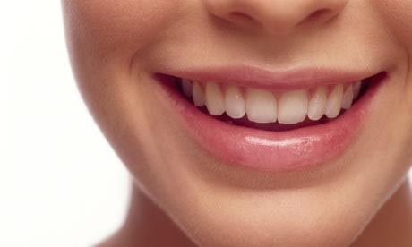
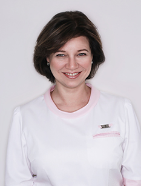
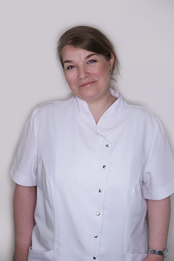
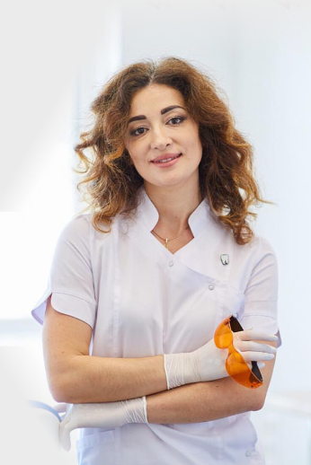
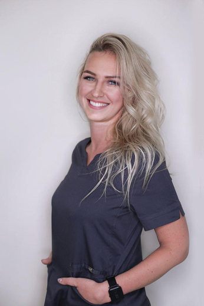

Позаботимся о совершенстве вашей улыбки
Неправильный прикус, плохие цвет и форма зубов, сколы и трещины, стёртые зубы —
все это поправимо.
Мы поможем вам добиться желаемого результата.
-
 Предсказуемость результатаОбеспечивается примеркой пластиковых моделей изготовленных специально для вас. Примерка будет вестись до тех пор, пока результат вас полностью не удовлетворит!
Предсказуемость результатаОбеспечивается примеркой пластиковых моделей изготовленных специально для вас. Примерка будет вестись до тех пор, пока результат вас полностью не удовлетворит! -
Надёжность и долговечностьЭстетическая корекция в нашей клинике проводится с учетом работы всей зубочелюстной системы. Такой подход даёт долговечный результат.
-
 Максимальное сохранение тканейMы бережно относимся к живым тканям зуба. Для того чтобы сохранить зуб мы проводим всю работу под большим увеличением - бинокулярами и микроскопом.
Максимальное сохранение тканейMы бережно относимся к живым тканям зуба. Для того чтобы сохранить зуб мы проводим всю работу под большим увеличением - бинокулярами и микроскопом.
Виниры и безметалловые коронки
Технология корректировки и защиты зубов тонкими керамическими пластинами.
Фактура, прозрачность и яркость керамики позволяет добиться эффекта той самой безупречной голливудской улыбки.
Установка виниров
в стоматологии ЭСТА
-
Ответственное
планированиеВместе с вами мы заранее определяем эстетические параметры будущей улыбки. Используя специальные подборки визуальных материалов, выбираем желаемые цвет и форму ваших будущих зубов. Учитывая ваши личные лицевые и мимические особенности доктор поможет определиться, подскажет лучшие решения и убережет от ошибок. Только после этого готовится пластиковая модель для живой примерки. -
Заранее известный
результатПеред установкой керамических виниров мы изготавливаем точную пластиковую модель, примерив которую вы можете увидеть свою будущую улыбку в зеркале, на фото или видео. После живой примерки мы вносим окончательные корректировки. И только убедившись, что это действительно то, что вы хотите — изготавливаем и устанавливаем виниры -
Виниры высшего
качестваВиниры и коронки для пациентов стоматологии ESTA изготавливаются лучшими зубными техниками Москвы. Наши ведущие врачи сами имеют практический опыт работы зубными техниками, поэтому выбирать лучших они умеют хорошо, ровно как и составить техническое задание, передающее мельчайшие детали вашей будущей улыбки.
Художественная реставрация
Художественная реставрация - это точное восстановление природной формы зубов с помощью специального композитного материала.
Восстановление не требует работы зубного техника, оно проводится стоматологом за один визит.

Художественная реставрация в стоматологии ЭСТА
Качество реставрации напрямую зависит от умения врача выбрать материал, создать форму зуба, восстановить индивидуальную фактуру эмали и конечно подобрать правильный уровень прозрачности, яркости и цвета.
Восстановление позволяет получить красивые зубы и часто представляет собой более бюджетную альтернативу винирам. Наши врачи помогут вам определиться с правильным решением.
-
Реставрация композитными материалами
премиум-классаEnamel Plus - итальянский материал с максимальными эстетическими характеристиками. Восстановленный зуб невозможно отличить от настоящего, границы реставрации будут буквально неразличимы.
Этот материал имеет большое количество оттенков, от ярко-белого до насыщенного темного, и большое количество вспомогательных характеристик которые позволяют полностью восстановить фактуру зуба для всех возрастных групп.
-
Планирование и
моделированиеЧаще всего реставрация делается за один прием, на котором доктор формирует анатомию будущего зуба. При восстановлении нескольких зубов, как и при работе с винирами, мы используем анатомический слепок и готовим пластиковую модель. Это даёт вам возможность примерить модель будущей реставрации и внести корректировки на начальном этапе. -
Dr. Lorenzo VaniniРаботаем по лучшим
мировым стандартамОдна из основателей нашей клиники, стоматолог-терапевт Светлана Эйгина, прошла обучение и практику у главного исследователя композита Enamel, профессора Lorenzo Vanini в Италии. Профессор Vanini является основоположником современной методики реставрации зубов методом послойного нанесения, технологии принятой сегодня в качестве главной методики обучения реставрации во всех университетах Европы и США.
Наша клиника - одна из первых кто стал использовать этот метод в России и сегодня одна из клиник с самым богатым опытом работы по этой методологии.

К руководителю клиники ЭСТА, Эйгиной Светлане Борисовне:
-
 20 лет опыта работы стоматологом-терапевтом
20 лет опыта работы стоматологом-терапевтом -
 Специализация в эстетической реставрации в Италии, Испании и Германии
Специализация в эстетической реставрации в Италии, Испании и Германии -
 Диплом и опыт зубного техника позволяет делать эстетические работы, которые недоступны другим врачам
Диплом и опыт зубного техника позволяет делать эстетические работы, которые недоступны другим врачам
Если у вас есть снимки полости рта или компьютерная томография,
принесите их с собой.
стоимость консультации 1000₽
СТОИМОСТЬ ЛЕЧЕНИЯ
-
Художественная реставрация жевательных зубов композитом Estelite5900 - 7900В стоимость входит анестезия, установка коффердама, препарирование зуба с использованием микроскопа, восстановление анатомической формы зуба и гарантия от вторичного кариеса на 10 лет
-
Художественная реставрация передних зубов композитом Estelite6900 - 10900В стоимость входит анестезия, установка коффердама, препарирование зуба с использованием микроскопа, восстановление зуба композитным материалом
-
Художественная реставрация композитом Enamel plus HRI15900В стоимость входит анестезия, установка коффердама, препарирование зуба с использованием микроскопа, восстановление зуба композитным материалом Enamel plus HRI
-
Винир цельнокерамический E-max "Classic"35000В стоимость входит планирование, снятие слепков, анестезия, примерка предварительной модели, техническая работа (временные и постоянные виниры), установка временных виниров, моделирование и коррекция десневого края, препарирование и фиксация постоянного винира.
-
Винир цельнокерамический E-max "Art"49000Винир с самыми высокими художественными характеристиками. В стоимость входит планирование, снятие слепков, анестезия, примерка предварительной модели, техническая работа (временные и постоянные виниры), установка временных виниров, моделирование и коррекция десневого края, препарирование и фиксация постоянного винира.
-
Коронка цельнокерамическая E-max "Classic"36000В стоимость входит планирование, снятие слепков, анестезия, примерка предварительной модели, техническая работа (временные и постоянные коронки), установка временных коронок, моделирование и коррекция десневого края, препарирование и фиксация постоянной коронки.
-
Коронка цельнокерамическая E-max "Art"49000Коронка с самыми высокими художественными характеристиками. В стоимость входит планирование, снятие слепков, анестезия, примерка предварительной модели, техническая работа (временные и постоянные коронки), установка временных коронок, моделирование и коррекция десневого края, препарирование и фиксация постоянной коронки.
-
Коронка из оксида циркония "Classic"36000В стоимость входит планирование, снятие слепков, анестезия, примерка предварительной модели, техническая работа (временные и постоянные коронки), установка временных коронок, моделирование и коррекция десневого края, препарирование и фиксация постоянной коронки.
-
Коронка из оксида циркония "Art"49000Коронка с самыми высокими художественными характеристиками. В стоимость входит планирование, снятие слепков, анестезия, примерка предварительной модели, техническая работа (временные и постоянные коронки), установка временных коронок, моделирование и коррекция десневого края, препарирование и фиксация постоянной коронки.
-
Тотальное протезирование с поднятием прикусаот 1300000Диоксид циркония / Керамика E-max, полный курс.
-
Ортодонтическая брекет-система, металлот 125000Полный курс лечения, одна челюсть
-
Ортодонтическая брекет-система, сапфирот 140000Полный курс лечения, одна челюсть
-
Ортодонтическая брекет-система, керамикаот 160000Полный курс лечения, одна челюсть
Реставрация зубов
Виниры
Безметалловые коронки
возростная и патологическая стираемость
Ортодонтия
Примеры эстетических работ


наши врачи
-
к.м.н. Эйгин Леонид ЕфимовичГлавный врач, стоматолог-ортопед
Главный врач, кандидат медицинских наук, Стоматолог-ортопед.
В ортопедической стоматологии с 1985 года. Окончил Московский Государственный Медико-стоматологический университет. Клиническая ординатура по специальности «ортопедическая стоматология».
- С 1995 г. по 2000 г. — преподавательская деятельность на кафедре стоматологии общей практики.
- В 2000 г. защитил кандидатскую диссертацию в Российском Государственном Медицинском Университете.
- 1995-1996 гг. обучение по имплантологии;
- 1998 г. обучение по методики полного съемного протезирования по системе Ивокап фирмы Ивокляр;
- 2001 г. курс по непрямым методам восстановления зубов;
- 2001 г. участие в международном симпозиуме по теме «Цельнолитые съемные протезы»;
- 2002 г. семинар по «Анатомии успешной практики»;
- 2005 г.семинар по теме «Протетическое использование имплантов системы «Астра»;
- 2007 г. международный симпозиум по теме «Возможности проведения реставраций на имплантах XiVE;
- 2008 г.семинар по планированию и методикам в современной имплантологии с помощью системы Friadent.
- 2009 г. курс лекций и семинаров на тему: «Биомеханника Височно-нижнечелюстного сустава и практические навыки работы с артикуляторами»
- С 2000 г. занимается частной практикой.
- 2010 г. Стажировка «Методы ортопедического лечения при дисфункции височно-нижнечелюстного сустава» в частном медицинском центре г. Женева.
- 2011 г. Участие в международном имплантологическом конгрессе по тематике сложного протезирования с применением системы Friadent (Dentsply).
- 2011 г. Симпозиум по технологиям протезирования при полном отсутствии зубов. Проходил стажировку в клиниках Германии, США, Израиля, Испании, Франции.
- 2012 г. Участие в XiVE-клубе (Закрытый симпозиум ведущих имплантологов и ортопедов)
- 2013г.– Участие в конгрессе «Проблемы окклюзии в стоматологии»
- 2014г.участие в семинаре «Применение наркоза в условиях стоматологической клиники при проведении имплантации»
-
Эйгина Светлана БорисовнаСтоматолог-терапевт, руководитель клиники
Стоматолог-терапевт-эндодонтист: 1997-2019
Зубной техник: 1991-1995
Благодаря редкому совмещению опыта зубного техника и опыта врача стоматолога Светлана может делать эстетические работы, которые недоступны другим врачам. Oкончила Московское зуботехническое училище с отличием в 1990 и Московский Государственный Медико-стоматологический университет с отличием в 1997 г.
- 1997 г. Oкончила Московский Государственный Медико-стоматологический университет (с отличием)
- 1999 г. Клиническая ординатура по специальности «терапевтическая стоматология»
- 2001 г. Семинар по нехирургической периодонтологии в Чикагском центре;
- 2002 г. практический курс по непрямому восстановлению зубов новейшими материалами в Американ дентал академии;
- 2002 г. Практический семинар по теме: «Успешное лечение корневых каналов в повседневной практике общего врача»;
- 2003 г. курс по актуальным вопросам пародонтологии в Германо-Российском стоматологическом обществе;
- 2003 г. курс обучения по теме «Современная эндодонтия-детям»:новые эндодонтические материалы и технологии,повышающие эффективность лечения в детском возрасте.
- 2005 г. Практический семинар «Цвет и свет в стоматологии»;
- 2006 г. Стажировка в университетской клинике г.Дюссельдорфа;
- 2007 г. мастер –класс по реставрациям в Иерусалимском учебном центре;
- 2008 г. Стажировка в частных Испанских клиниках;
- 2010 г. мастер класс в Иерусалимском университете по программе новейших разработок в методике эндодонтического лечения корневых каналов зубов;
- 2011 г. мастер-класс в учебном медицинском центре г. Дюссельдорф по методикам пломбировки корневых каналов термопластифицированной гуттаперчей;
- 2011 г. – диплом «Непрямая методика изготовления эстетических композитных реставраций , доктор Даниэле Рондони , Италия
- 2011 г. – участие в конгрессе «Прикладная эндодонтия. Усовершенствование знаний в области лечения каналов со сложной анатомией. Лечение кист и гранулем в одно посещение»
- 2012 г. – мастер-класс на Inernational Congress of VOW- Endodontic Synergy GmbH
- 2012 г. – Международный конгресс «Эстетическая стоматология – художественная реставрация – современные принципы» Дюссельдорф, Германия
- 2012 г. – «Дизайн улыбки. Прямые композитные системы и цельнокерамические реставрации» Международный симпозиум врачей, Калифорния США
- 2013 г. — Italy,San Fedele Intelvi, Dr. Lorenzo Vanini. Theoretical and Practical Course «Consevative direct restoration in anterior sectors following Dr. Lorenzo Vanini stratification technique». Enamel Plus HRi, Micerium Group (Italy).
- 2013 г. – «Современные системы отбеливания зубов. За и против»
- 2013 г. – «Современная концепция эстетической стоматологии» C. D Arcangelo
-
 Межнева Малика АлександровнаСтоматолог-терапевт
Межнева Малика АлександровнаСтоматолог-терапевтСтоматолог-терапевт
- Диплом с отличием в 1999 году.
- 2006 г. Сертификат по терапевтической стоматологии в Московском Государственном Медико-стоматологическом университете
- 2006 г. Курс повышения квалификации по теме: «Актуальные вопросы стоматологии»
- 2007 г. Международный симпозиум «Революционная техника в эндодонтическом лечении»
- 2007 г. Мастер-класс в Центральном Научно-исследовательском институте стоматологии по современным методам лечения каналов зубов
- 2008 г. Семинар «Эстетическая реставрация зубов» г. Полтава
- 2008 г. Семинар «Основные современные концепции нехирургического пародонтального лечения»
- 2008 г. Семинар «Актуальные проблемы современной эндодонтии и их решения»
- 2009 г. Семинар по теме «Клинические особенности эстетической реставрации с применением современных материалов КОМПАНИИ 3М ESPE»
- 2010 г. Семинар по офисной методике отбеливания зубов и мастер-класс по использованию клинической системы ZOOM компании «Discus Dental»
- 2011 г. Диплом по непрямым методам изготовления эстетических композитных реставраций
- 2011 г. Учебный цикл по тематике: «Приобретенные пороки развития зубов (флюороз, гипоплазия)»
- 2011 г. Практический семинар «Цвет и свет в стоматологии»
- 2011 г. Семинар «Новые тенденции развития современной реставрационной стоматологии»
- 2012 г. Курс повышения квалификации в Российской медицинской академии последипломного образования
- 2012 г. Семинар «Новые подходы к лечению кариеса и гиперчувствительности дентина»
- 2012 г. Семинар «Перелечивание. Клинические решения и техники»
- 2012 г. Семинар «Обзор современных методов инструментации и обтурации каналов»
- 2013 г. Семинар «Практические нюансы каждодневной эндодонтии»
- 2013 г. Семинар «Различные виды отбеливания зубов. Показания и противопоказания»
-
Костюченко Зинаида КонстантиновнаСтоматолог-ортодонт
Работает в ЭСТА-Аэропорт/Смайлдент 10 лет. Окончила в 1994 году МГМСУ имени Евдокимова. Неоднократно посещала образовательные семинары по использованию различных ортодонтических приспособлений. В 2007 году прошла обучение на базе РМАПО. Принимала участие в конференциях в Венгрии, ОАЭ и Португалии. Исправляет прикус в любом возрасте независимо от природы дефектов. Устраняет обширные окклюзии. Устанавливает брекет-системы. Применяет сегментарную аппаратуру. Сопровождает пациентов на протяжении всего периода лечения. Восстанавливает жевательную способность и улучшает эстетику зубного ряда.
- 1996г. - специализация в ЦНИИ Стоматологии по современной несъемной ортодонтической технике с применением брекет-системы.
- 2001 г. - курс лекций в профессиональном обществе ортодонтов России.
- 2003 г. - семинар по философии, принципам и технике в ортодонтии.
- 2005 г. - теоретический и практический курс по лингвальной аппаратуре и ее применению на современном этапе.
- В 2007 г. закончила Российскую Академию постдипломного образования.
- 2009 г. – «Ортодонтическое лечение на разных стадиях. Проблемы ретенционного периода» (Доктор Сильвия Герон). «Ортодонтическая подготовка перед ортогнатической хирургией» (Профессор Назан Кучукелес) г. Санкт-Петербург
- 2009 г. – Сертификат «Incognito Certification Course» (г. Москва)
- 2010 г. – «Сегментарная техника в ортодонтии» (г. Москва)
- 2010 г. – участие в международном симпозиуме Forestadent (г. Париж)
- 2011 г. – Международный симпозиум «Будущее эстетической ортодонтии. Лечение взрослых пациентов» (ОАЭ, г. Дубай)
- 2012 г. - участие в международном симпозиуме Forestadent (г. Будапешт)
- 2013 г. – «Современные методы и актуальные тенденции при лечении открытого, глубоко прикуса и аномалий окклюзии по II и III классу» (г. Москва)
- 2013 г. – «Новые концепции в современной опоре» Доктор Бёрн Людвиг (Германия)
- 2013 г. - участие в международном симпозиуме Forestadent (Португалия)
- 2013 г. – «Философия SWING: главная цель – достижение функциональной окклюзии» (г. Москва)
-
Хило Элина АлиевнаСтоматолог-терапевт, детский стоматолог
Профильные направления деятельности: эндодонтия (лечение каналов зубов), работа с микроскопом, лечение кариеса, детскя стоматология, проведение профессиональной гигиены полости рта, проведение процедуры отбеливания зубов.
- 1995-2001 гг. — Сибирский Государственный Медицинский Университет. Педиатрический факультет. Специализация -педиатрия
- 2001-2003 гг. — Клиническая ординатура по специализации педиатрия.
- 2005-2007 гг. — Кемеровская государственная медицинская академия. Стоматологический факультет. Специализация –стоматология.
- 2007-2008 гг. — Клиническая интернатура по специализации стоматология.
- 2011 г. — Профессиональная переподготовка по специальности «Стоматология терапевтическая», ГБОУ ВПО СибГМУ Минздравсоцразвития России.
- 2013 г. — Профессиональная переподготовка по специальности «Организация здравоохранения и общественное здоровье», ГБОУ ВПО СибГМУ Минздравсоцразвития России.
- 2013 г. — «Осложнения в эндодонтической практике», Михаил Соломонов.
- 2014 г. — «Смежные области в эндодонтии», Михаил Соломонов.
- 2014 г. — IV международный эндодонтический конгресс, г. Москва.
- 2014 г. — SAF. Самоадаптирующийся файл: новая концепция минимально инвазивной 3D-эндодонтии.
- 2014 г. — «Восстановление анатомической формы зубов в эстетических реставрациях», А.В.Ветчинкин.
- 2014 г. — «Определение и воссоздание цвета в эстетических реставрациях зубов», А.В.Ветчинкин.
- 2015 г. — V международный эндодонтический конгресс, г.Москва.
- 2015 г. — «Трехмерная радиодиагностика острой и хронической травмы зубов», Рогацкин Д.В.
- 2015 г. — «Пародонтология в ежедневной практике врача стоматолога-терапевта», Марина Приямпольская.
- 2016 г. — «профессиональная гигиена, как неотъемлемое требование в работе врача-стоматолога», Дементьева Е.А.
- 2016 г. — «Мир микроскопной стоматологии. Погружение в новую реальность», Елена Липатова.
- 2016 г. — Estetic Restoration Biofunctional Approach Dr. Didier Dietschi
- 2016 г. — «Реставрация фронтальных зубов», Василиадис Р.А.
- 2017 г. — Профессиональная переподготовка по специальности «Стоматология детская», ФГБОУ ВО «Нижегородская государственная медицинская академия» Министерства здравоохранения РФ.
- 2017 г. — Анестезиология в детской стоматологической практике. Реставрация временных зубов. Небольсина Е.В.
- 2017 г. — «Лечение осложненного кариеса сформированных и несформированных временных зубов», Небольсина Е.В.
- 2017 г. — «Профилактика в ежедневной практике детского стоматолога», Сурмина М.
- 2017 г. — «Современные методы устранения дисколоритов зубов», Акулович А.В.
- 2018 г. — «Системные коммуникации с пациентом, индивидуальный подход.», Wilson Learning.
- 2018 г. — «Управление поведением ребенка. Местное обезболивание», Скатова Е.А.
- 2018 г. — «Структурный подход к проведению эндодонтического лечения», Тумашевич А.В.
- 2018 г. — «Minimal Invasive Approach in Estetic Dentistry», Dr. Linda Greenwall.
- 2018 г. — «эндодонтия постоянных несформированных зубов. Реставрация.», Скатова Е.А.
-
 Каграманов Александр СеменовичСтоматолог-ортопед
Каграманов Александр СеменовичСтоматолог-ортопедСтоматолог-ортопед
- 2009 г.- окончил Смоленскую Государственную Медицинскую Академию
- 2010 г.- клиническая интернатура по специальности «стоматология общей практики»
- 2010-2012 г.- клиническая ординатура на базе Московского Государственного Медико-Стоматологического Университета им. Евдокимова Минздрава России на кафедре «Общей и эстетической стоматологии» по специальности «стоматология общей практики»
- 2011 г.- принял участие в лекционно-практическом курсе компании Kerr «Инновационные технологии в эстетической стоматологии»
- 2011 г.- фантомный курс по препарированию под различные типы ортопедических конструкций, полостей I-V класса по Блэк. Базовые навыки работы с увеличением в стоматологии. Израиль, г.Рамат-Ган
- 2011 г.- принял участие в лекционном курсе М.Соломонова (DMD) «Практические нюансы каждодневной эндодонтии «, Medical Consulting Group
- 2011 г.- принял участие в лекционном курсе М.Соломонова (DMD) «Обзор современных методов инструментации и обтурации корневых каналов», Medical Consulting Group
- 2012 г.- присвоена специальность «организация здравоохранения и общественное здоровье»
- 2013 г.- принял участие в теоретическом курсе Максима Белограда (DDS) «От эндодонтии к реставрации. Минимально-инвазивные концепции. Перелечивание и реабилитация», Art Dental Club
- 2013 г.- присвоена квалификация врача стоматолога-хирурга
- 2013 г.- присвоена квалификация врача стоматолога-ортопеда
- 2014 г.- принял участие в семинаре по теме «Основы протезирования на имплантатах системы Xive» (Rolf Rothammer), группа компаний СИМКО
- 2014 г.- принял участие в лекционном курсе М.Соломонова (DMD) «Эндодонтические аспекты в ортопедии- что обязан знать ортопед и уметь делать эндодонтист», Medical Consulting Group
- 2014 г.- принял участие в учебном курсе Яковлева Д.Н. (КМН) «Мастерство дентальной фотографии и цифровой анализ улыбки»
- 2015 г.- присвоена квалификация врача стоматолога-терапевта
- 2015 г.- принял участие в симпозиуме»Особенности стоматологического лечения пациентов группы анестезиологического риска» в рамках XII Всероссийской конференции
- 2015 г.- принял участие в лекционно-практическом курсе по работе с операционном микроскопом в стоматологии ( Mark Botzer «Operating Microscope in dentistry. From setup to final restoration»)
- 2015 г.- посетил семинар Адилханяна В.А. (КМН) на тему «Оттиск высокого стандарта» , компания «3М Россия»
- 2015 г.- принял участие в теоретическом курсе «Focus on Implants in Oral Rehabilitation. Consept, Indication, and Handling of the XIVE Implant System», Ludwigshafen, Германия
- 2016 г.- принял участие в лекционном курсе Балабановского (DMD) «Клинические аспекты планирования изготовления ортопедических конструкций на имплантатах», Medical Consulting Group
- 2016 г.- принял участие в семинареАлиева «MYTHBUSTER 2.0 Развенчание мифов об имплантатах»
- 2017 г.- принял участие в семинаре «DSD. Цифровой дизайн улыбки»
- 2018 г.- протезирование на имплантах системы Osstem
-
Исаченко Анна ВикторовнаЧелюстно-лицевой хирург, стоматолог-терапевт
Стоматолог-терапевт, врач общей практики, челюстно-лицевой хирург.
Работает в ЭСТА/Смайлдент 5 лет.
Профессиональные навыки: лечение кариеса и пульпита,удаление временных и постоянных зубов, герметизация фиссур, пластика уздечек языка, верхней губы, имплантация Osstem, удаление третьих моляров разной степени сложности, лечение пациентов в седации.
Основное образование:
- Российский университет дружбы народов, Стоматология
- Ординатура РУДН на кафедре челюстно-лицевой хирургии.
Дополнительное образование/курсы:
- Стажировки в стоматологических клиниках
- Постоянный участник конференций и конгрессов.
пн-пт: 09:00 — 21:00
сб: 10:00 — 16:00